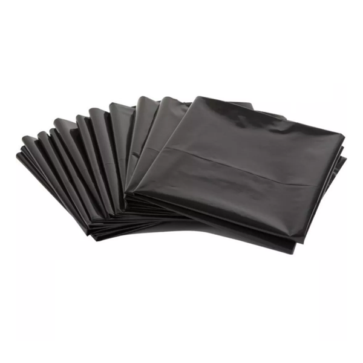
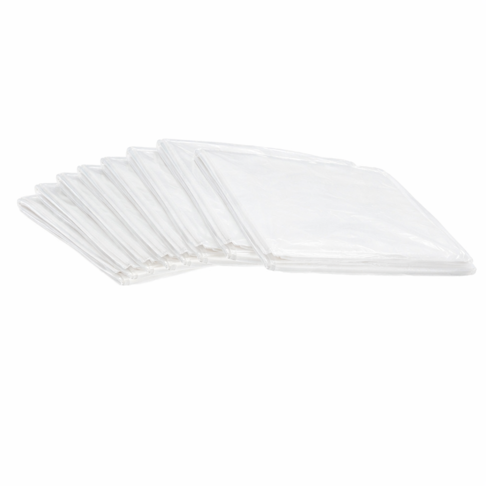
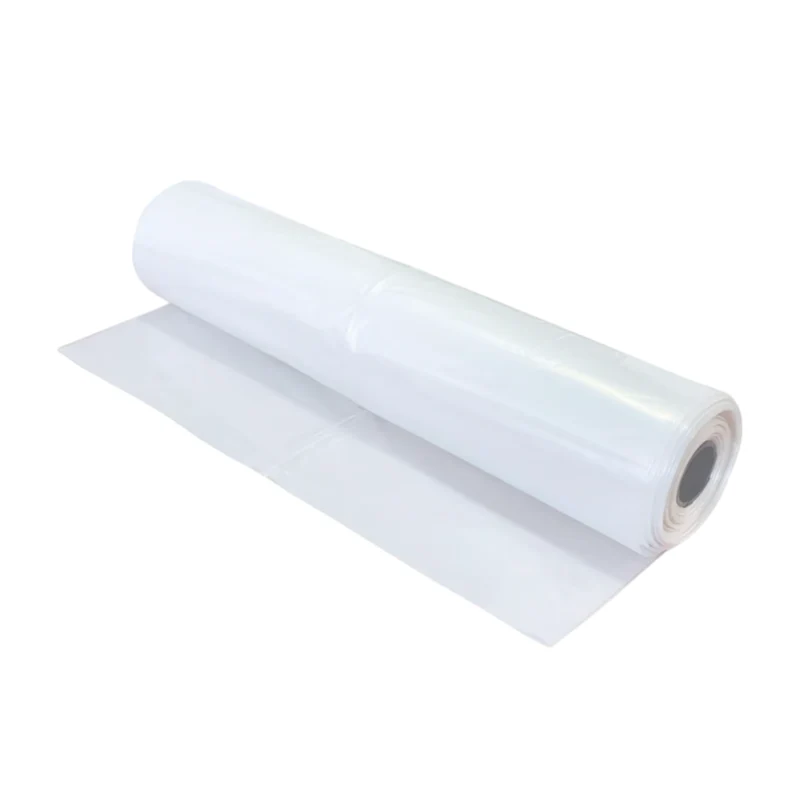
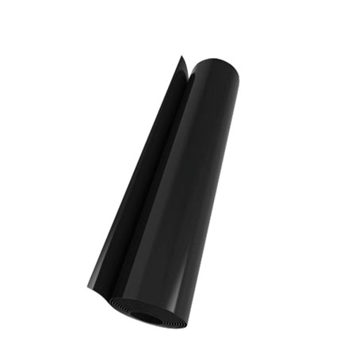
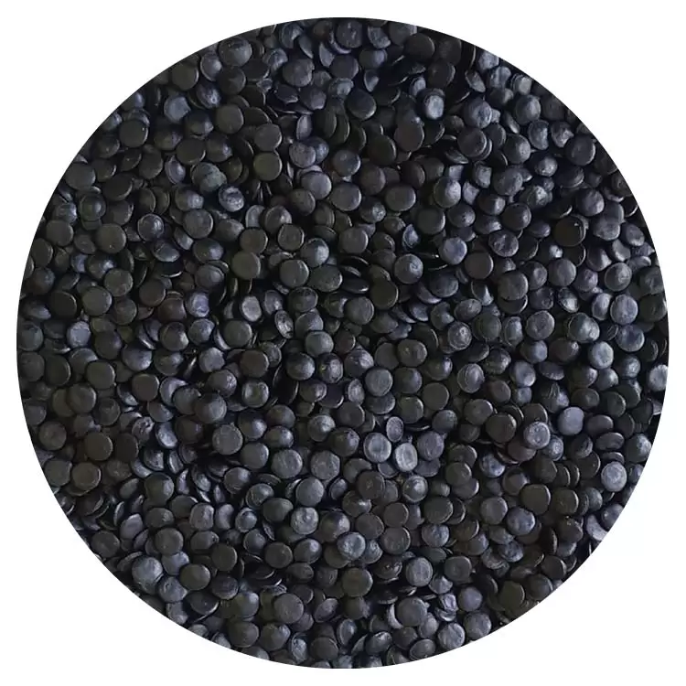
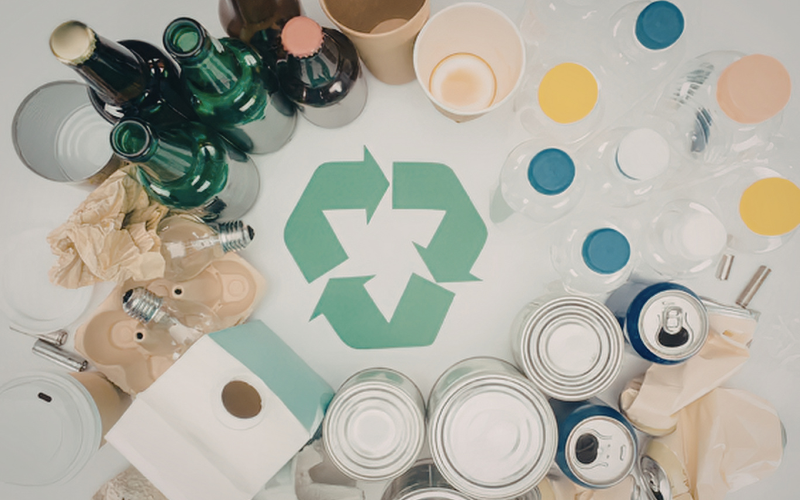
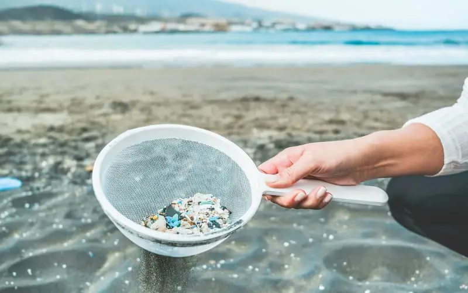

Reciclaje de PEBD
Reciclamos polietileno de baja densidad post-industrial (mermas de empresas de envoltorios, film, etc.) y de segundo uso, transformándolo en pellets de alta calidad mediante procesos de trituración, extrusión y desgasificación.
Reciclamos polietileno de baja densidad post-industrial (mermas de empresas de envoltorios, film, etc.) y de segundo uso, transformándolo en pellets de alta calidad mediante procesos de trituración, extrusión y desgasificación.
Comercializamos pellets reciclados de PEBD en formato de maxisacos (800kg) o sacos de 25kg, listos para que otras empresas fabriquen sus productos: mangas, bolsas, cañerías y más.
Fabricamos mangas plásticas con nuestros propios pellets reciclados mediante máquinas de extrusión, para uso comercial e industrial.
Producimos bolsas de basura a partir de nuestras mangas plásticas mediante procesos de sellado, ofreciendo productos resistentes y sustentables.





Fabricamos nuestros propios pellets reciclados, garantizando calidad y trazabilidad en todo el proceso productivo.
Ver ProcesoAños de Experiencia
comprometidos con el reciclaje
Toneladas Mensuales
de plástico reciclado
Clientes Satisfechos
en todo Chile
Compromiso Ambiental
en cada proceso

Contribuir al desarrollo sostenible mediante el reciclaje de plásticos, ofreciendo soluciones de alta calidad que satisfagan las necesidades del mercado, al mismo tiempo que promovemos una cultura de responsabilidad ambiental.
Ser una empresa líder en reciclaje de plásticos en Chile, reconocida por su compromiso ambiental, la calidad de sus productos y la confianza que construye con sus clientes y comunidades.

Protegemos y preservamos el medio ambiente mediante procesos responsables y sostenibles. Cada producto que fabricamos es el resultado de nuestro compromiso con el planeta.

Ofrecemos productos certificados, resistentes y duraderos que contribuyen a la economía circular, garantizando calidad en cada paso del proceso productivo.

Procesos optimizados con trazabilidad completa del proceso productivo. Plantas de reciclaje, reutilización y fabricación con tecnología de punta.

Promovemos la responsabilidad ambiental, patrimonial y cultural. Cumplimiento riguroso en todos los aspectos para atender las diversas necesidades del mercado.
"Trabajamos con Plásticos Lambruchini desde hace 5 años y siempre han demostrado compromiso con la calidad y el medio ambiente. Sus productos son confiables y su servicio es excelente."
- Juan Pérez, Gerente de Operaciones
"La calidad de los pellets reciclados es excepcional. Hemos reducido significativamente nuestra huella de carbono al incorporar sus productos en nuestra cadena de suministro."
- María González, Directora de Sustentabilidad
"Las bolsas de basura que producen son resistentes y cumplen con todos nuestros estándares. Además, nos ayudan a cumplir con nuestras metas de sostenibilidad."
- Carlos Rojas, Gerente de Compras
En nuestra plasnta reciclamos exclusivamente polietileno de baja densidad (PEBD). Generalmente reciclamos materiales post-industriales (envoltorios, film, etc.), aunque tambien utilizamos plastico de segundo uso. También gestionamos otros materiales como PP y PEAD.
Sí, compramos PEBD post-industrial limpio directamente de empresas que generan mermas en sus procesos de fabricación (envoltorios, film, etc.). El material debe estar almacenado en lugares de acopio y en buenas condiciones de limpieza. Contáctanos para evaluar tu material.
Sí, vendemos pellets de PEBD reciclado en maxisacos de 800kg o sacos de 25kg. Nuestros pellets son de alta calidad y pueden ser utilizados para fabricar mangas, bolsas, cañerías y otros productos plásticos.
No, no contamos con proceso de lavado en nuestra planta. El material que recibimos debe llegar limpio desde los lugares de acopio. El PEBD post-industrial que compramos generalmente ya viene muy limpio.
Sí, fabricamos mangas plásticas y bolsas de basura con medidas y especificaciones según las necesidades de tu empresa. Contáctanos para cotizar productos personalizados elaborados con nuestros pellets reciclados.
Ofrecemos pellets en dos formatos: maxisacos de 800kg (para grandes volúmenes) y sacos de 25kg (para volúmenes menores o pruebas). Los pellets tienen forma de lentejas y están listos para uso inmediato en extrusoras.
Sí, además del PEBD que reciclamos en nuestra planta, gestionamos otros materiales plásticos como intermediarios. Trabajamos con Polipropileno (PP) y Polietileno de Alta Densidad (PEAD), coordinando su peletización con plantas especializadas. Una vez procesado, comercializamos el pellet resultante. En algunos casos también compramos y vendemos estos materiales según las necesidades del mercado.
Visítanos en nuestra planta de reciclaje ubicada en la esquina de Rinconada de Nos con Portales, San Bernardo.
Plásticos Lambruchini SpA
Rinconada de Nos #08
Esquina con Portales
San Bernardo, Santiago
Chile
Lunes a Viernes: 8:00 - 18:00
Sábado: 9:00 - 13:00
Domingo: Cerrado